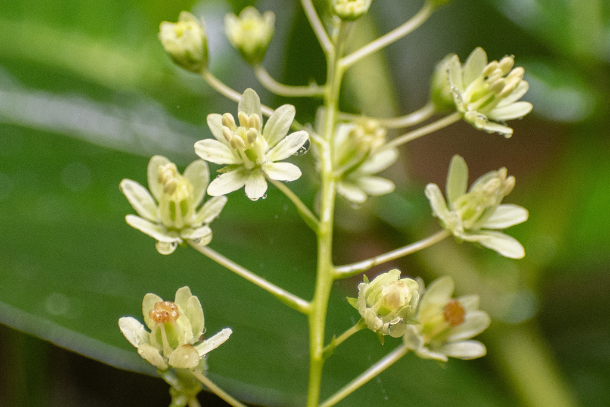

Tovariaceae
(No common name / Tovaria Family)
Tovariaceae is a small, monogeneric family of flowering plants in the order Brassicales. It contains only the genus Tovaria, with one or two species of large herbs or soft shrubs native to the Neotropics (Mexico to Bolivia). The family is characterized by its alternate, palmately compound (trifoliolate) leaves, presence of mustard oil glycosides (glucosinolates), flowers with an unusual number of parts (typically 8 sepals, 8 petals, 8 stamens), a superior ovary, and fruit that is a many-seeded berry.
Overview
Tovariaceae is a distinct family within the Brassicales order, easily recognized by its combination of trifoliolate leaves and flowers typically having parts in eights – a rare feature in angiosperms and particularly unusual within Brassicales, which often features 4-merous flowers (like the mustard family, Brassicaceae).
The single genus, Tovaria, consists of robust herbaceous plants or weakly woody shrubs found in montane forests, often in disturbed or wet, shady locations, from Mexico south through Central America into the Andes. Like many members of Brassicales, these plants contain glucosinolates, chemical compounds responsible for the pungent smell and taste of mustards and cabbages, which likely serve as a defense against herbivores. When crushed, the foliage often has a rank or pungent odor.
The family has no significant economic importance but is of botanical interest due to its unique floral structure, its phylogenetic position within Brassicales, and its distinct morphology compared to its relatives like capers (Capparaceae) and mustards (Brassicaceae).
Quick Facts
- Scientific Name: Tovariaceae
- Common Name: None widely accepted (sometimes Tovaria family)
- Number of Genera: 1 (Tovaria)
- Number of Species: 1-2 (often treated as 1, Tovaria pendula)
- Distribution: Neotropics (Mexico to Peru/Bolivia, Caribbean); montane forests.
- Evolutionary Group: Eudicots - Rosids - Malvids - Brassicales
Key Characteristics
Habit
Plants are coarse, often large herbaceous perennials or soft-wooded shrubs, reaching up to 2-3 meters tall. They possess glucosinolates (mustard oil glycosides), often giving them a pungent odor when bruised.
Leaves
Leaves are arranged alternately and spirally along the stem. They are characteristically palmately compound, typically with 3 leaflets (trifoliolate), though rarely 5-7 leaflets occur. Leaflets have entire (smooth) margins. Small stipules are present at the base of the petiole.
Inflorescence
Flowers are borne in long, terminal, often drooping or nodding racemes, which can be quite elongated (up to 50 cm or more).
Flowers
Flowers are bisexual and radially symmetrical (actinomorphic). They are notable for having parts typically in multiples of 8 (or ranging from 6 to 9).
- Calyx: Consists of (6-)8(-9) distinct (free) sepals, usually greenish.
- Corolla: Consists of (6-)8(-9) distinct (free) petals, typically greenish-yellow or whitish, often narrowed at the base (clawed).
- Androecium: Contains (6-)8(-9) distinct stamens, usually the same number as petals and alternating with them. Anthers are often basifixed.
- Gynoecium: The ovary is superior and often borne on a short stalk (gynophore). It is composed of (5-)6(-8) fused carpels forming a single chamber (unilocular) with parietal placentation (ovules attached to the ovary wall, often on intrusive placentas). Ovules are numerous. There is a single short style topped by a capitate (head-like) or lobed stigma.
Fruits and Seeds
The fruit is a globose, fleshy, many-seeded berry, often purplish or blackish when ripe.
Seeds are numerous, small, and typically kidney-shaped (reniform).
Field Identification
Identifying Tovariaceae relies on the combination of its herbaceous/shrubby habit, distinctive leaves, inflorescence type, unusual flower part numbers, and fruit type, within its Neotropical range:
Primary Identification Features
- Palmately Compound (Trifoliolate) Leaves: Alternate leaves divided into 3 leaflets are highly characteristic.
- Large Herb or Soft Shrub Habit: Robust, non-woody or weakly woody plants.
- Long Terminal Racemes: Elongated, often drooping clusters of flowers at the stem tips.
- Flowers with ~8 Parts: Look for flowers with typically 8 sepals, 8 petals, and 8 stamens (unusual number).
- Superior Ovary, Berry Fruit: Ovary positioned above sepals/petals; fruit is a fleshy berry.
- Pungent Odor: Often smells rank or like mustard/cabbage when crushed (due to glucosinolates).
- Neotropical Distribution: Found in mountain forests from Mexico to Bolivia.
Secondary Identification Features
- Stipules Present: Small stipules at the leaf base.
- Gynophore: Ovary may be visibly stalked within the flower.
- Parietal Placentation: (Requires dissection).
Seasonal Identification Tips
- Flowering/Fruiting: The long racemes of flowers or developing berries are conspicuous during the reproductive season.
- Vegetative State: The alternate, trifoliolate leaves and herbaceous/soft shrub habit are key vegetative clues.
Common Confusion Points
- Cleomaceae (Spiderflower Family): Also in Brassicales, often herbs with palmately compound leaves and racemes. However, Cleomaceae flowers are typically zygomorphic (bilaterally symmetrical), usually have 4 petals and 6 stamens (often on an androgynophore), and fruit is typically a silique-like capsule (replum present).
- Capparaceae (Caper Family): Also in Brassicales, can be shrubs or herbs with simple or palmately compound leaves. Flowers often have 4 sepals, 4 petals, numerous stamens, and fruit is often a berry or capsule on a gynophore (similar fruit/stalk, but flower parts differ).
- Passifloraceae (Passionflower Family): Some members (e.g., certain Passiflora) have palmately lobed or compound leaves, but flowers are highly complex with a corona, different stamen/ovary structure, and fruit is usually a berry or capsule with arillate seeds. Often vines.
- Fabaceae (Legume Family): Many legumes have trifoliolate leaves, but flowers are typically zygomorphic (pea-like) or sometimes actinomorphic (Mimosa-like) with different structures, and the fruit is a legume (pod).
Field Guide Quick Reference
Look For:
- Herb/soft shrub (Neotropics)
- Alternate, trifoliolate leaves
- Pungent smell when crushed
- Long terminal racemes
- Flowers usually 8-merous (8 sepals, 8 petals, 8 stamens)
- Superior ovary (often on gynophore)
- Fruit a berry
Key Distinctions:
- vs. Cleomaceae: Tovariaceae flowers actinomorphic, ~8 parts; Cleomaceae zygomorphic, ~4 petals/6 stamens, capsule fruit.
- vs. Capparaceae: Tovariaceae ~8 petals/stamens; Capparaceae ~4 petals, often many stamens.
- vs. Fabaceae: Tovariaceae flowers not pea-like, fruit a berry not a pod.
Notable Examples
The family is monogeneric, containing only Tovaria:

Tovaria pendula
(No common name)
The main (and often only recognized) species in the family. A large herb or shrub found in humid montane forests from Mexico to the Andes. Characterized by its trifoliolate leaves, long drooping racemes of 8-merous greenish-yellow flowers, and purplish berries. Contains glucosinolates.

Floral Structure
Unusual Merosity
The typically 8-merous flowers (8 sepals, 8 petals, 8 stamens, often 6-8 carpels) of Tovaria are highly unusual for angiosperms in general and particularly for the Brassicales order, where 4-merous flowers (like mustards) are common. This unique floral formula is a key feature of the family.
Phylogeny and Classification
Tovariaceae is placed within the order Brassicales, part of the malvid clade within the rosid eudicots. This order is well-known for containing the economically important Brassicaceae (mustard family) and is characterized by the widespread production of glucosinolates (mustard oil glycosides).
Molecular phylogenetic studies place Tovariaceae as one of the earlier diverging lineages within the core Brassicales, often sister to a clade containing families like Capparaceae (capers) and Cleomaceae (spiderflowers), or sometimes sister to the Resedaceae (mignonette family). Its exact position relative to these other families helps clarify the evolutionary history and diversification of floral forms and chemical defenses within the order.
Position in Plant Phylogeny
- Kingdom: Plantae
- Clade: Angiosperms (Flowering plants)
- Clade: Eudicots
- Clade: Rosids
- Clade: Malvids
- Order: Brassicales
- Family: Tovariaceae
Evolutionary Significance
Tovariaceae, though small, is evolutionarily significant:
- Phylogenetic Position: Its placement as an early-diverging lineage within the core Brassicales provides insights into the ancestral traits and early evolution of the order.
- Unique Floral Formula: The predominantly 8-merous flowers are highly unusual within the order and angiosperms generally, offering a case study in the evolution of floral merosity.
- Morphological Combination: The combination of trifoliolate leaves, glucosinolates, 8-merous flowers, and berry fruit distinguishes it clearly from its relatives.
- Biogeography: Its restricted Neotropical distribution contrasts with the more global spread of some related families, contributing to understanding the order's biogeographic history.